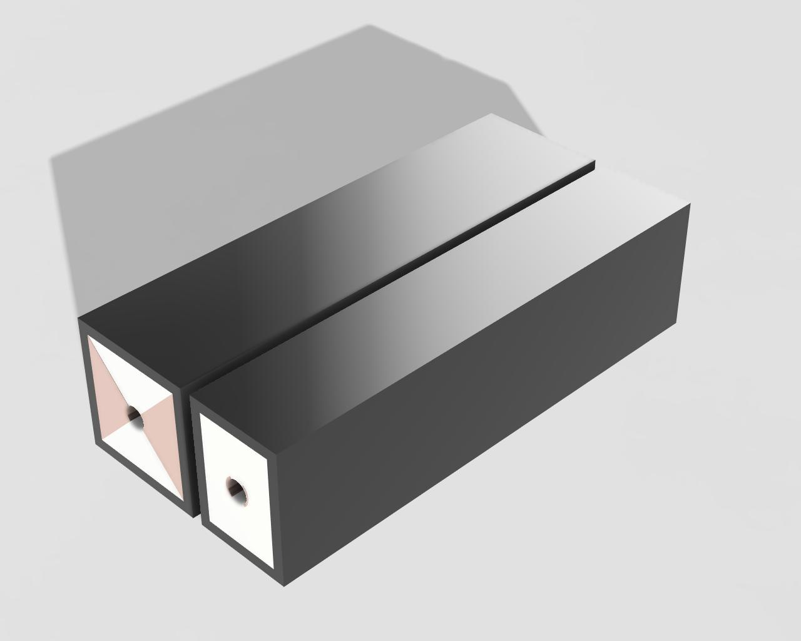

Now that it's the final trimester of the school year, everyone in my Engineering class has begun their final project. This year, I'm working with Emmett Hart (the same person I did the datalogging EZ-I65 with) on a small railgun. So far, we've got most of our materials ordered, we've played around with a car jumpstarter, and we're working on the designs for the railgun's 3D printed parts. There's a lot of math involved with the railgun, which I'd like to be able to talk about here. So, I got MathJax working on my website. Some examples: F=IL\times B: $$F=IL\times B$$ I=\frac{V}{R}: $$I=\frac{V}{R}$$ \overrightarrow{F}_E=\frac{1}{4\pi \epsilon_0}\frac{q}{r^2}: $$\overrightarrow{F}_E=\frac{1}{4\pi \epsilon_0}\frac{q}{r^2}$$ MathJax's compatibility with TeX/LaTeX sure does make using it convenient, since I already use LaTex to do chemistry and physics assignments. The principle of a railgun's operation heavily relies on one main equation: $$F=IL\times B$$ This is the equation for the force on an object due to a magnetic field and a current flowing through a length of conductor L. This equation is what is used to calculate the force on the railgun's slug. Our railgun's barrel is set up in a similar way to the Naval Surface Warfare Center's railgun, where the barrel has 2 copper rails and 2 insulative rails machined in such a way that a hole is made down the middle. For illustration, here's a rough model I threw together in Fusion 360 that illustrates the similarities and differences between our barrel design and the NSWC's barrel design. Left: NSWC design Right: Our design  As you can see, our design does take inspiration from the NSWC barrel, but it uses substansially less copper and is more compact. This is because the NSWC barrel has to allow the current from a several megajoule capacitor bank to flow through it, whereas ours doesn't even have to handle 1000A. This drawing is not drawn to scale, and is just to show the two barrel designs. The NSWC barrel is dozens of times larger than ours. The conductive rails of our barrel are going to be made out of 3/8" copper tube with a 1/2" inner diameter. The insulative part of the barrel is going to be 3D printed with ABS or PETG plastic. This does mean the barrel is fairly weak, but given our time and monetary constraints, 3D printing is the best we can do for the barrel. Given the time and money, we would probably opt for resin or another more durable material instead. Our capacitor bank is made up of 2.7V, 360F capacitors from Mouser. We have 3 of them ordered, giving us a total of 360F of capacitance at 8.1V to drive our railgun with. If we use the equation for maximum discharge current given by the capacitor's datasheet, we can calculate the maximum discharge current of our capacitor bank. First, we need to find the resistance of our copper rails. $$\rho_{copper}=1.68*10^{-8}\Omega *m$$ $$A=3.95*10^{-5}m^2$$ (3/8" OD tube, 1/4" ID, 1/4 tube used) $$l=0.1m$$ $$R=\frac{1.68*10^{-8}\Omega *m *0.1m}{3.95*10^{-5}m^2}=4.25*10^{-4}\Omega = 0.000425\Omega$$ We have 2 copper rails hooked up in series, so their total resistance is 0.00085 ohms. This can be added to the ESR of the capacitors, and we can use the equation provided in the capacitor's datasheet to calculate the maximum current. $$I=\frac{0.5V_R}{\frac{\Delta t}{C}+ESR_{DC}}$$ Where: $$V_R=2.7*3=8.1V$$ $$\Delta t=1s$$ $$C=360F$$ $$ESR_{DC}=0.0029*3\Omega + 0.000425\Omega = 0.01295\Omega$$ So, $$I=\frac{0.5*8.1V}{\frac{1s}{360F}+0.01295\Omega}=257.51A$$ So now that we know the current, we can calculate the magnetic field generated by the current flowing through the rails. Here's a demonstration of the magnetic field generated by a 15 amp current: $$B=\frac{\mu_0}{2\pi}\frac{I}{r}$$ $$\mu_0=4\pi * 10^{-7}$$ $$I=257.51A$$ $$r=0.01m$$ $$B=\frac{\mu_0}{\pi}\frac{257.51A}{0.01m}=0.0103T = 103.004G$$ Given this estimation of B, we can find the force on the slug. $$F=IL\times B$$ $$F=(257.51A)(0.1m)\times (0.0103T)=0.27N$$ And, ignoring air resistance, we can calculate the muzzle velocity of the slug assuming it is 5 grams. $$v_f^2=v_0^2+2a\Delta x$$ $$v_0=0$$ $$a=\frac{F}{m}$$ $$m = 0.005kg$$ $$\Delta x=0.1m$$ $$a=\frac{0.27N}{0.005kg}=54m/s^2$$ $$v_f^2=2a\Delta x$$ $$v_f=\sqrt{2a\Delta x}$$ $$v_f=\sqrt{2*54m/s^2*0.1m}=3.28m/s$$ So, assuming we have a 5 gram projectile, our railgun with a barrel length of 0.1m should theoretically accelerate the slug to a speed of 3.28m/s. That's pretty slow. In order to increase the speed of the projectile, we need more voltage so that we can deliver more current to the rails. First, we'll test the railgun with what we have now though, then enlarge our capacitor bank for more speed. Our current goal is 50m/s, which should definitely be acheivable with a larger capacitor bank.